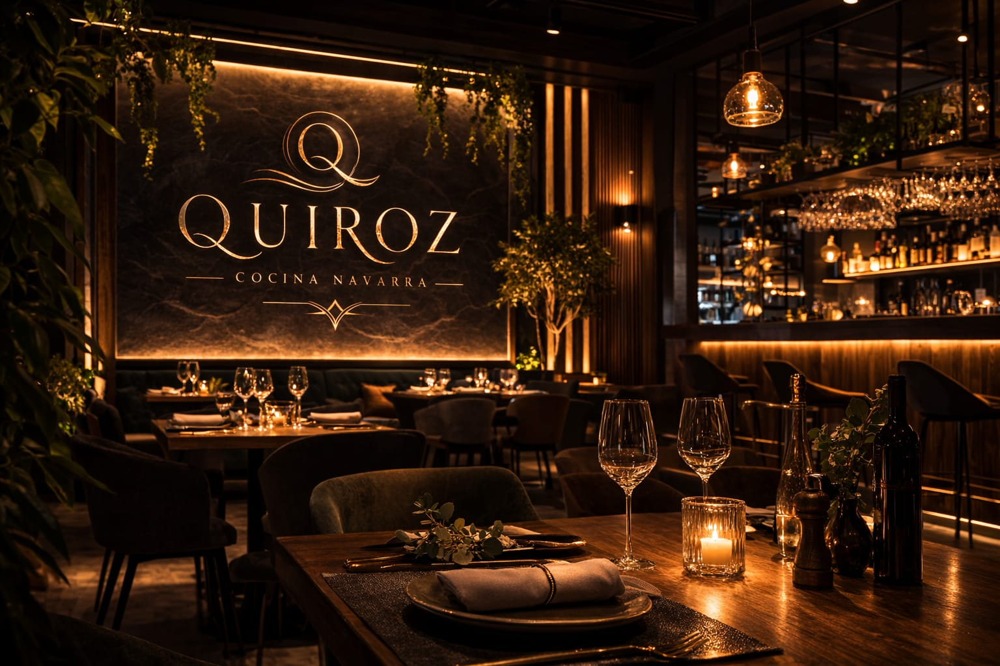
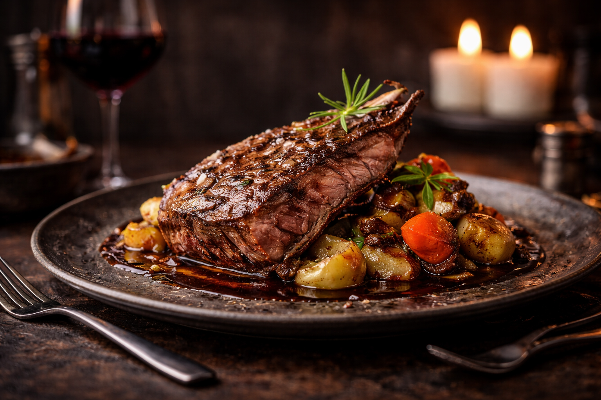
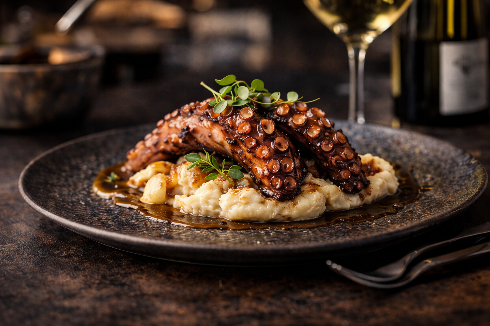
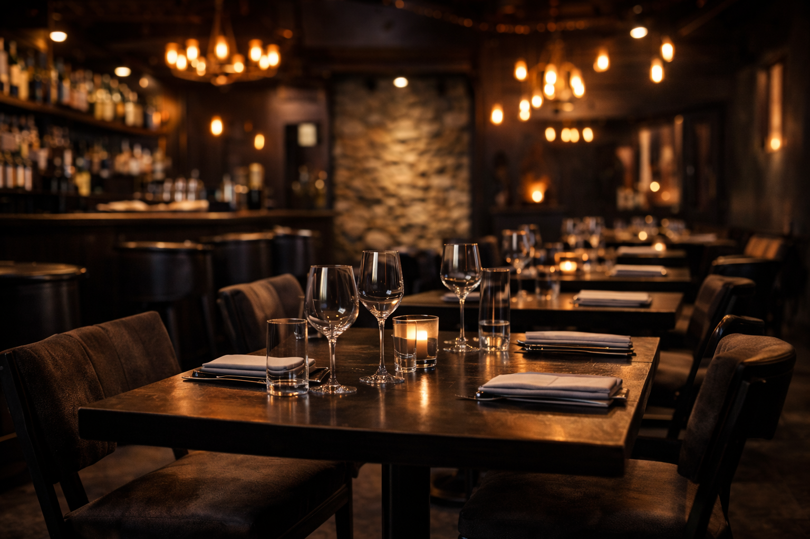

Producto local
Verduras, carnes y quesos de Navarra. Sabor real y proveedores de confianza.
Cocina moderna con sabor de Navarra
Un restaurante moderno en Pamplona, con producto local y una carta viva según mercado. Reserva fácil por WhatsApp, sin llamadas.
Producto navarro, cocina de temporada y un espacio moderno pensado para disfrutar.
Verduras, carnes y quesos de Navarra. Sabor real y proveedores de confianza.
Carta viva según temporada: menos platos, más calidad y coherencia.
WhatsApp + ubicación clara. Menos fricción, más mesas llenas.
Fotos reales del local y platos. En demo usa las 4 imágenes que generamos.




Prueba social rápida. En la versión final se usan reseñas reales.
“Producto de calidad y trato excelente. Ambiente moderno y acogedor.”
— Cliente verificado“Menú del día buenísimo. Se nota el cuidado en la cocina y en los detalles.”
— Reseña tipo Google“Carta corta, pero todo estaba espectacular. Repetiremos.”
— Cliente localDirección clara + mapa + WhatsApp. Esto es lo que más convierte.
* Demo conceptual. Contenido e imágenes pueden ser de ejemplo.